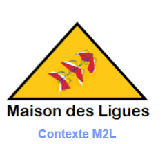
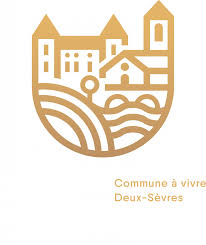

Applications et sites développés durant ma formation et mon stage

Contexte : Évolution majeure du site M2L pour la gestion dynamique des ligues, des formations et des bulletins de salaire des intervenants (salariés et bénévoles).
Ma contribution : Développement de la partie B - Gestion des intervenants et bulletins de salaire (niveau difficulté 2/3). Mise en place d'un système complet permettant :
contrôleurBulletins et vue vueBulletinsRéalisation technique : PHP Objet strict, architecture MVC (DTO/DAO), gestion sécurisée des fichiers PDF, système d'authentification et d'autorisation multi-niveaux (RH / Salarié / Bénévole).
Contexte : Développement d'une application de gestion de tournois e-sport pour le Commissariat au Numérique de Défense (CND). L'application permet de suivre en temps réel les scores et matchs lors de compétitions entre étudiants et militaires.
Ma contribution : Développement du système d'authentification complet (OAuth2, inscription, connexion, gestion des tokens JWT). Implémentation des endpoints sécurisés pour la gestion des utilisateurs et des mots de passe.
Réalisation technique : API REST sécurisée, OAuth2, JWT Bearer tokens, hachage bcrypt...

Développement d'une application web PHP/MVC pour la gestion des démarches administratives des associations locales.
Développement d'une application web métier et pilotage de projet pour le second stage à l'ESI de Bordeaux.